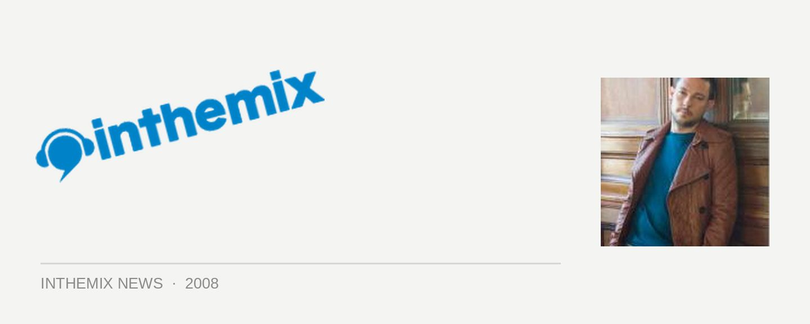

Jason Bye returns for Together
He was a resident at Home’s Saturday night back in the day, and is definitely remembered fondly by many in the Sydney dance community. And while he’s had a four-year hiatus from our beautiful city, this weekend he’s returning to play a mainroom set at Paul Strange’s new together night at The Arthouse.
Kicking off his DJ career back in 1994, he started spinning at local bars and kitchens before moving to Ibiza in the summer of ‘95 to take up residency at Cafe Mambo, as well as regular slots at the likes of Cream and Manumission. Winning success back home, he soon returned to Ibiza to ink a three-year deal with Amnesia in a deal that saw him playing alongside every superstar DJ. Finally arriving in Austrlia in 1999, he took the reigns at Home’s Saturday night in a time when dance culture was exploding in Australia. Several years ago he departed, but now he’s back…
Together with Jason Bye hits The Arthouse this Saturday May 10th from 9pm.